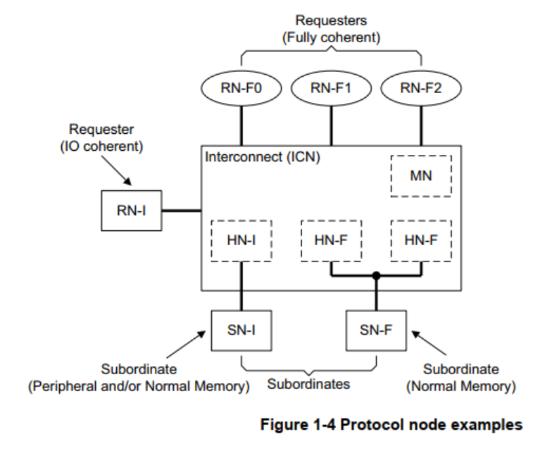
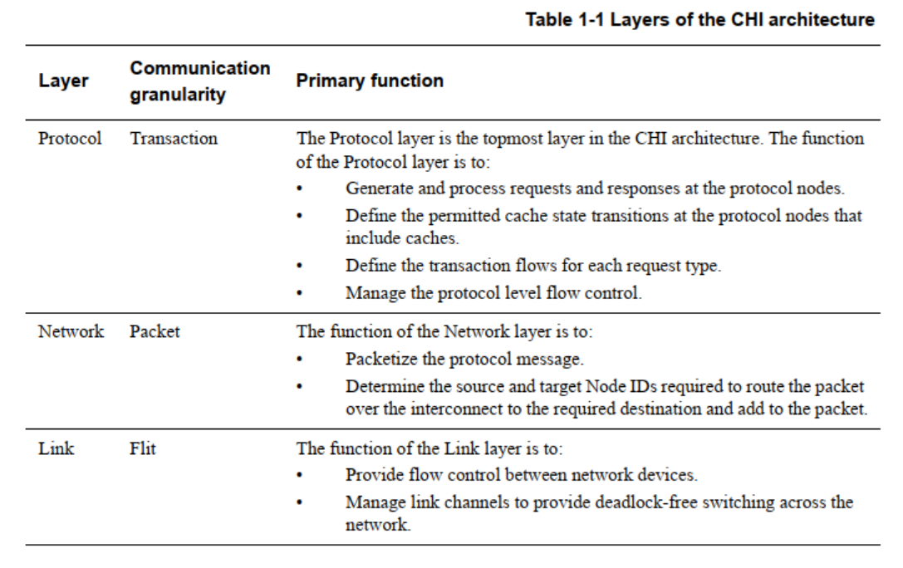
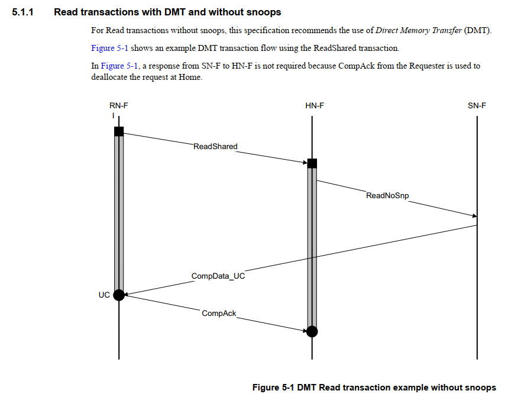
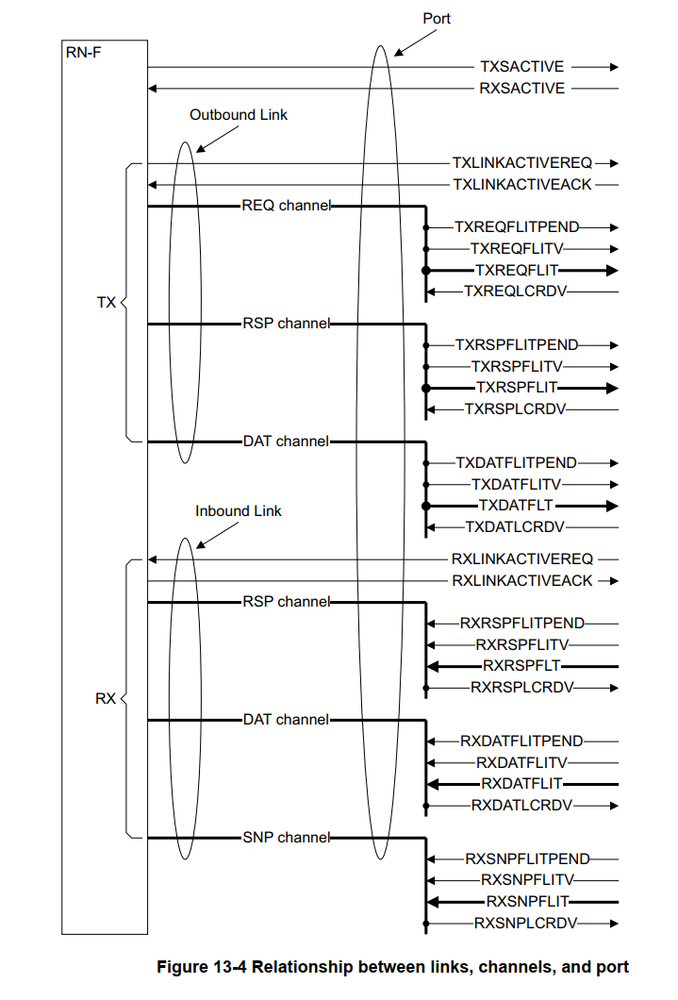
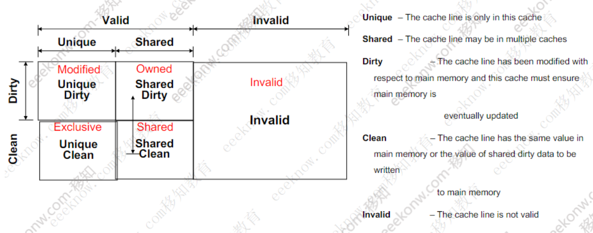
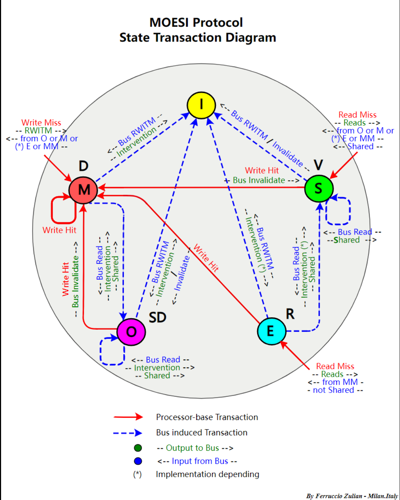
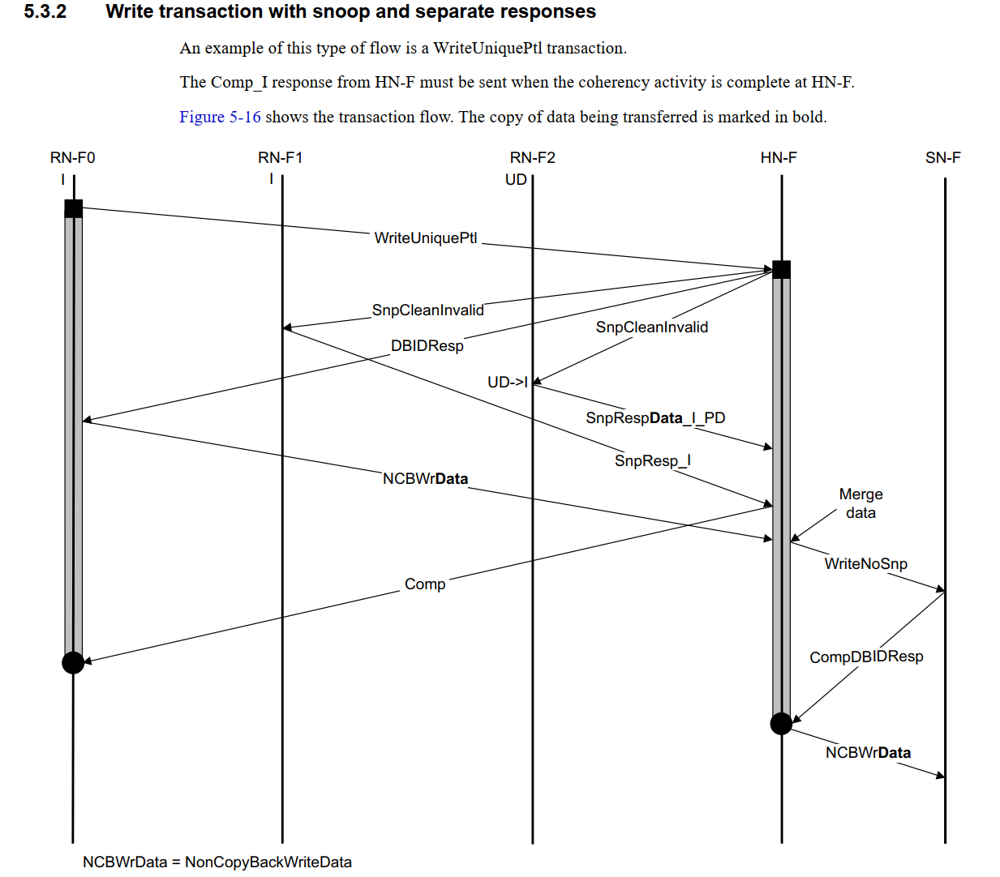

CHI 协议
[toc]
CHI协议作用
用于片上互连。连接SoC内的各个组件。
可以用于各种拓扑

Component
**RN：**接收请求
**HN：**维护cache一致性，在CMN700中，HNF包括SLC，Combined PoS/PoC(ordering)，Snoop Filter
**SN：**接收来自HN的请求

协议分层
分为三层，可以参考PCIe协议的三层。

**Protocol层（软件层）：**定义transaction 种类及对应的流程；
**Network层：**根据transaction 类型，生成packet。这里就会用到SAM表，来生成路由的flit包。
**Link层（硬件层）：**收发Flit包；流控。4种6个channel。
Protocol 层
Transaction 类型
CHI支持的tansaction非常多，大的类型主要有read，write，snoop，atomic，snoop等。
| Type | Transaction Type | Description |
|---|---|---|
| Read | ReadNoSnoop | 发起不需要缓存一致性检查的读请求。 |
| Read | ReadOnce | 发起读取一次数据的请求，可能需要缓存一致性检查。 |
| Read | ReadShared | 发起读取共享数据的请求，确保数据在其他缓存中有效。 |
| Read | ReadClean | 发起读取并清除数据的请求，确保数据在其他缓存中被标记为无效。 |
| Read | ReadNotSharedDirty | 发起读取非共享且已修改数据的请求，用于确保数据一致性。 |
| Read | ReadUnique | 发起唯一读取请求，确保数据在其他缓存中无副本。 |
| Snoop | CleanUnique | 清除唯一缓存行请求，确保数据在其他缓存中无副本。 |
| Snoop | CleanShared | 清除共享缓存行请求，确保数据在其他缓存中被标记为无效。 |
| Snoop | MakeUnique | 将共享数据转换为唯一数据的请求。 |
| Snoop | Evict | 驱逐缓存行请求，将数据从缓存中移除。 |
| Snoop | StashOnce | 将数据暂存到指定的目标缓存中。 |
| Snoop | StashUnique | 将数据唯一暂存到目标缓存中，确保在目标缓存中无副本。 |
| Snoop | DVM Operations | 支持维护缓存一致性的各类 DVM 操作（如 TLB 管理、缓存清除等）。 |
| Write | WriteNoSnoop | 发起不需要缓存一致性检查的写请求。 |
| Write | WriteUnique | 发起唯一写入请求，确保数据在其他缓存中无副本。 |
| Write | WriteLineUnique | 发起整行唯一写入请求，确保缓存行在其他缓存中无副本。 |
| Write | WriteBack | 将修改后的数据写回到内存中，确保数据一致性。 |
| Write | WriteClean | 写入并清除缓存行请求，确保缓存行在其他缓存中被标记为无效。 |
| Write | WriteEvictFull | 写入并驱逐整个缓存行的请求，确保缓存行在其他缓存中被移除。 |
| Atomic | Atomic Operations | 支持原子操作（如读-修改-写），确保多核系统中的数据一致性和同步。 |
看个具体的transaction flow

-
RN-F sends a Read request to HN-F.
-
HN-F sends a Read request to SN-F
The ID field values in the Read request are based on where the data response is to be sent. Data can be sent to the Requester or to the HN-F.
-
SN-F sends a data response directly to RN-F.
-
RN-F sends CompAck to HN-F as the request is ReadShared and requires CompAck to complete the transaction.
Network层
根据tansaction 类型以及SAM表，生成packet，包括srcid，tgtid等等的信息。
SAM表有RNSAM, HNSAM
用到的算法有直接映射和哈希映射。哈希映射有power of 2 hashing， hieracical hashing等。
Link层
4种6个channel。
TX: RSP DATA REQ
RX: RSP DATA SNP

缓存一致性
为什么需要缓存一致性，多个核，有多个cache，每个cache里有同一个数据的不同副本，改写任一一个副本，会导致其他副本和当前副本数据不一致，就需要维护这种一致性。
缓存一致性协议非常多，这里介绍两个用的最多的。
Cache line states

MESI

MOESI
MESI 协议在大部分场景下效果很好，但是在有些场景下会出现性能问题。例如，当状态为 M 的缓存行收到一个总线读信号时，它需要把脏数据写回内存中，然后才能和其他 CPU 共享这个数据， 因此频繁写回内存的操作会影响系统性能， 那如何继续优化呢？ MOESI 协议增加了一个拥有（ Owned， O）状态，状态为 M 的缓存行收到一个总线读信号之后，它不需要把缓存行的内容写入内存，而只需要把 M 状态转成 O 状态。 MOESI 协议除新增 O 状态之外， 还重新定义了 S 状态， 而 E、 M 和 I 状态与 MESI 协议中的对应状态相同。 与 MESI 协议中的 S 状态不同， 根据 MOESI 协议， 状态为 O 的高速缓存行中的数据与内存中的数据并不一致。 状态为 O 的缓存行收到总线读信号，不需要把缓存行内容写回内存中。 在 MOESI 协议中， S 状态的定义发生了细微的变化。 当一个高速缓存行的状态为 S 时， 它包含的数据并不一定与内存一致。如果在其他 CPU 的高速缓存中不存在状态为 O 的副本，该高速缓存行中的数据与内存一致；如果在其他 CPU 的高速缓存中存在状态为 O 的副本，该高速缓存行中的数据与内存可能不一致。

一个栗子
| address | data | |
|---|---|---|
| DDR | 0x100 | 0xa |
| Cache 1 | 0x100 | 0xa |
| Cache 2 | 0x100 | 0xa |
core 2 要修改自己的cache中的数据
| address | data | |
|---|---|---|
| DDR | 0x100 | 0xa |
| Cache 1 | 0x100 | 0xa |
| Cache 2 | 0x100 | 0xa --> 0xb |
具体操作：
发出一个写请求，然后HN收到这个写请求，开始查directory，发现有其他备份。发snoop，把其他备份废掉。然后就可以写cache了。现在自己是独占的了，也就可以写回到ddr中了。
最基础的操作，为了优化性能，还有很多花活。

CHI实现机制-基于目录
缓存一致性协议可以通过不同的机制实现，主要包括基于嗅探（snooping）和基于目录（directory-based）两种方式。AMBA CHI（Coherent Hub Interface）协议使用的是基于目录（directory-based）的缓存一致性机制。
工作原理
- 目录存储状态：每个内存块在目录中有一个条目，记录了该内存块当前在哪些缓存中存在，以及其状态（如共享、独占等）。
- 请求与响应：当一个处理器（或缓存）发出读/写请求时，它首先查询目录。目录会根据记录的信息决定如何响应这个请求，并通知相关缓存进行必要的状态更新或数据传输。
优点
- 扩展性好：由于不依赖于共享总线，基于目录的协议可以很好地扩展到大规模多处理器系统。
- 减少通信：通过目录中心化管理，减少了不必要的缓存间通信。
目录机制的实现
在CHI协议中，目录机制通常实现为：
- 集中式目录：在小规模系统中，目录可以集中存储在一个中心位置，所有处理器都通过这个中心位置查询和更新缓存状态。
- 分布式目录：在大规模系统中，目录可以分布在多个节点中，每个节点负责一部分内存块的缓存状态管理。这种方式提高了系统的扩展性和性能。
基于嗅探的缓存一致性协议
基于嗅探的缓存一致性协议依赖于总线上的通信，每个缓存控制器都监听（嗅探）总线上其他处理器发出的内存操作请求，以确保缓存的一致性。
工作原理
- 总线嗅探：所有缓存控制器监听总线上所有的读/写请求。每当一个处理器在总线上发出一个请求，其他缓存控制器都会检查自己缓存中的数据，并根据需要进行响应或更新。
- 状态变化：根据嗅探到的请求，缓存行的状态可能会改变。例如，如果一个缓存控制器嗅探到一个读取请求并发现自己持有该数据的独占或修改副本，它可能需要提供该数据并更新状态。
优点
- 实现简单：基于嗅探的协议比较简单，易于实现。
- 实时响应：由于所有缓存控制器都在监听总线上的请求，可以快速做出响应。
缺点
- 总线带宽限制：所有缓存都共享同一个总线，总线带宽成为系统性能的瓶颈。
- 扩展性差：随着处理器数量的增加，总线上的通信开销会显著增加，导致系统性能下降。
待补充：
- DVM